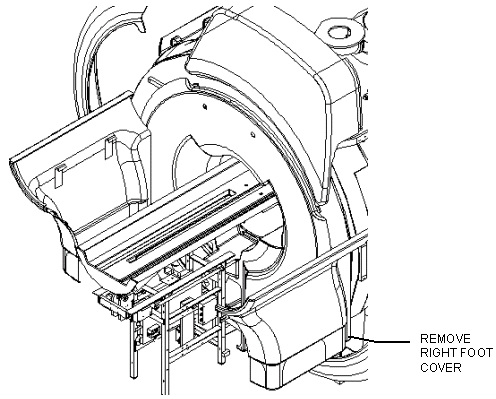
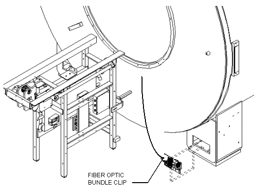
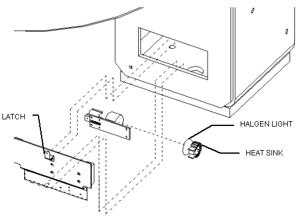

Operating Documentation
Direction 5133315-3, Rev# 14
Signa EXCITE HD 1.5T Service Methods
Module Version 1.0, Version Date 5/3/07
Operating Documentation |
| Required Persons | Preliminary Reqs | Procedure | Finalization |
|---|---|---|---|
| 1 |
Procedures for replacing the halogen light bulb used for the fiber optic bore lights.
Lock out and tag out circuit breaker MR1 A14 CB6 at rear of RF/Pen Cabinet (MR1) on magnet enclosure power supply (MEPS) module.
For RF/Pen II and RF/PDU Cabinet: Lock out and tag out circuit breaker MR1 A20 CB4 at rear of RF/Pen II and RF/PDU Cabinet on System Support Module (SSM).
(Refer to .)
Verify that voltage between MR1 A14 TP4 (+) and TP13 (–) is 0 Vdc.
For RF/Pen II and RF/PDU Cabinet, verify that voltage between MR1 A20 TP4 (+) (SRI+24V) and TP13 (–) (SRI RTN) is 0 Vdc.
Remove right rear enclosure panel. See Illustration 1.
Illustration 1: REAR COVERS

Turn latch holding light source assembly ¼ turn to the right and pull assembly out. See Illustration 2.
Illustration 2: FIBER OPTIC LIGHT SOURCE

Pull off plug on halogen light and heat sink. Pull halogen light and heat sink off plate. Halogen light and heat sink will need to be rocked back and forth to accomplish this. See Illustration 3.
Illustration 3: FIBER OPTIC BORE LIGHT SOURCE

Pull heat sink off of halogen light bulb.
Slide heat sink onto new halogen light bulb.
Press light/heat sink assembly in place on plate.
Feed light assembly into hole in magnet foot and turn latch ¼ turn counter clockwise to close.
Put enclosure cover back in place.
Remove tag-out tag from circuit breaker MR1 A14 CB6 or MR1 A20 CB4.
Restore power to operator button panel and display assemblies by switching on circuit breaker MR1 A14 CB6 at rear of RF/Pen Cabinet (MR1) on MEPS module.
RF/Pen II and RF/PDU Cabinet: Switch on circuit breaker MR1 A20 CB4 on the SSM at rear of RF/Pen II Cabinet or RF/PDU.
No finalization steps.